28 Years Gone — Harry Potter's Eternal Ache
逝世28年，《哈利·波特》永远的痛。
这是一篇图文纪念，保留原文剧照与动图；每段中文下方附英文译文。
1998年5月2日，是所有《哈利波特》读者和影迷终生难忘的一天。
霍格沃茨被夷为平地，所爱之人永阴阳相隔。
May 2, 1998 — a day every Harry Potter reader and moviegoer will remember for life. Hogwarts was razed to the ground; those we loved, forever parted.
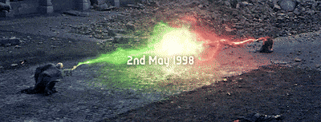
2026年5月2日，是霍格沃茨大战28周年。
也是斯内普教授逝世28周年。
May 2, 2026 marks the 28th anniversary of the Battle of Hogwarts — and the 28th anniversary of Professor Snape’s passing.
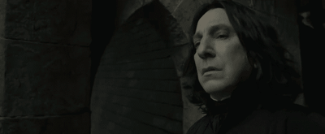
时至今日，或许我们已经不再相信魔法，但每次想起斯内普，依旧会泪目。
第一眼，我就觉得他绝对是个反派。
深深的眼袋、大大的鼻子、一头中分长发十几年不洗油光可鉴，那身黑袍拍了8集都没换过。
To this day, we may no longer believe in magic — but every time we think of Snape, our eyes still well up.
At first glance, I was certain he was the villain.
Deep eye bags, a large nose, center-parted long hair unwashed for what looked like a decade until it shone — and that black robe he wore through all eight films without ever changing.
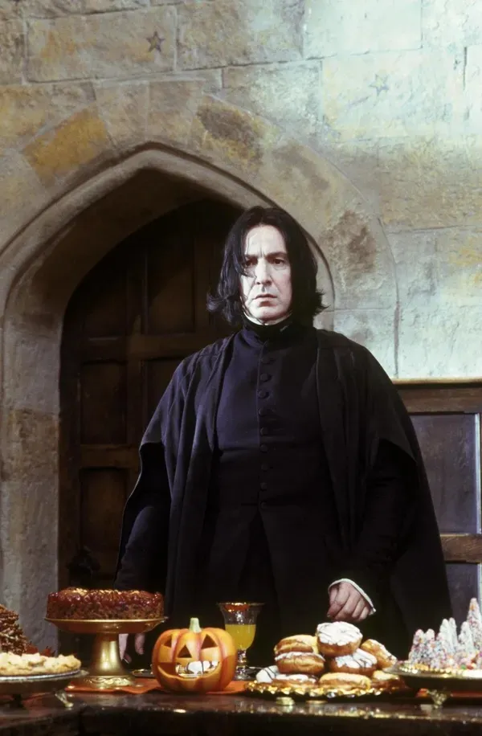
他瞪哈利一眼，伤疤剧痛，不寒而栗。
One glance from him at Harry, and the scar seared with pain — a chill down the spine.
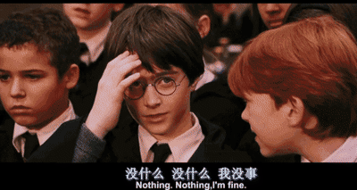
他凶神恶煞，处处对哈利和罗恩赶尽杀绝。
He was menacing, hounding Harry and Ron at every turn, giving no quarter.
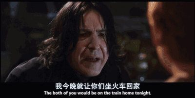
他刻薄寡恩，纳威最大的恐惧就是斯内普。
Cruel and ungenerous — Neville’s greatest fear was Snape himself.
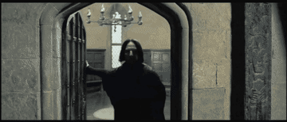
他曾经是食死徒，臭名昭著。
He had been a Death Eater, notorious and reviled.
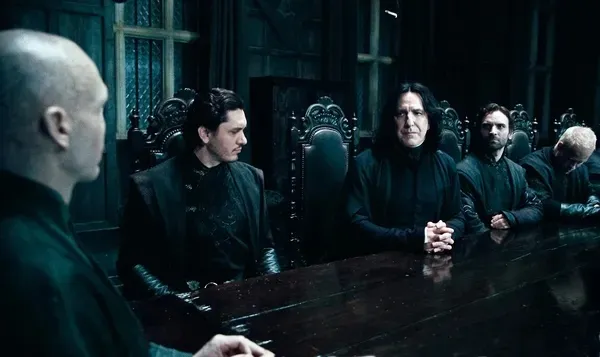
他破口大骂哈利去世的父亲：傲慢、软弱，就是一头猪。
He cursed Harry’s dead father to his face: arrogant, weak — nothing but a pig.
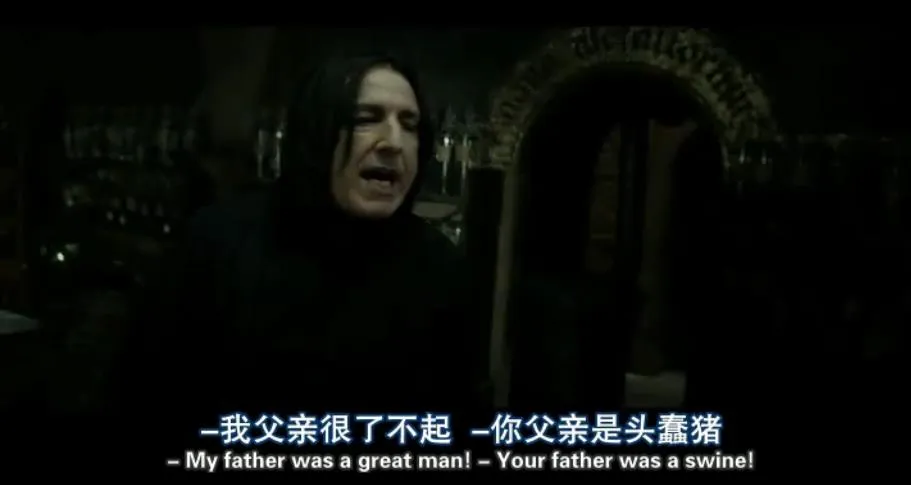
是他，亲手杀死了邓布利多！
It was he who killed Dumbledore with his own hand!
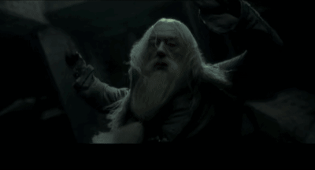
他坏事做尽、忘恩负义，却顺理成章当上校长。
当哈利咆哮“你有什么资格站在邓布利多的位置”。
当麦格教授将他扫地出门时，全校欢呼，大快人心。
After every evil deed, every betrayal, he ascended to Headmaster as if it were only natural.
When Harry roared, “What right have you to stand where Dumbledore stood?”
When Professor McGonagall drove him out, the whole school cheered — deeply, darkly satisfying.
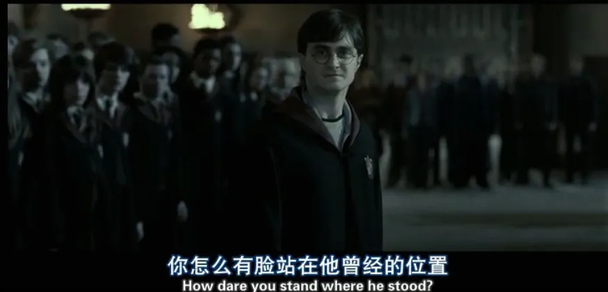
但是当我们回顾这些片段时，却已泪流满面。
哈利喜欢向邓布利多告状：“斯内普他——” “哈利，不是斯内普，是斯内普教授。
”每一次，邓布利多都郑重其事要哈利改口。
因为只有邓布利多，心知肚明。
斯内普的确是个“反派”，他背负着一生骂名，甘愿与世界为敌。
为了什么？
哈利入学的第一天，所有人都关注他额头的伤疤，唯独斯内普盯着他的眼睛。
But looking back on these moments now, we are in tears.
Harry loved to tattle to Dumbledore: “Snape — he—”
“Harry, not Snape. Professor Snape.” Every time, Dumbledore solemnly corrected him.
Because only Dumbledore knew the truth.
Snape was indeed a “villain” — he bore a lifetime of infamy, willingly making the world his enemy. For what?
On Harry’s first day at school, everyone stared at the scar on his forehead. Only Snape stared into his eyes.
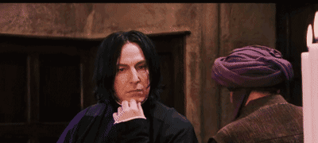
从第一眼，到每一眼。
From the first glance, to every glance after.
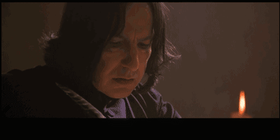
只因为哈利有一双和他母亲莉莉一样的眼睛。
Only because Harry had his mother Lily’s eyes.
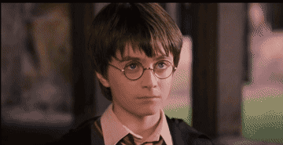
《哈利波特》电影共8集，斯内普就骂了哈利的爸爸8部，唯独对哈利的母亲莉莉绝口不提。
Across all eight Harry Potter films, Snape cursed Harry’s father in every single one — yet never breathed a word about Harry’s mother, Lily.
初遇，山谷树下。
Their first meeting: beneath a tree in a valley.
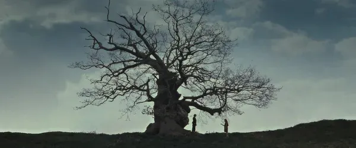
一个被骂怪胎的小女巫，遇上一个孤僻古怪的小男巫。
雏菊在掌中盛放，飞草迎着风开花，他望着那双碧绿双瞳： “我和你一样，别怕。
”
A little witch called a freak met a lonely, odd little wizard.
Daisies bloomed in her palm, flutterby bushes flowered in the wind, and he gazed into those green eyes:
“I’m just like you. Don’t be afraid.”
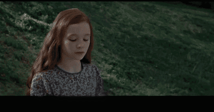
入学，分院帽下。
她去了格兰芬多，他去了斯莱特林。
At school, beneath the Sorting Hat — she went to Gryffindor, he to Slytherin.
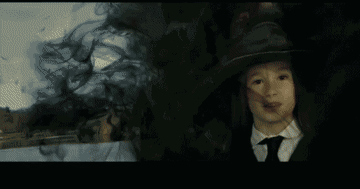
男孩的世界只有那双眼睛，但那双眼睛已不再愿多停留一秒。
The boy’s world held only those eyes — but those eyes would no longer linger on him for even a second.
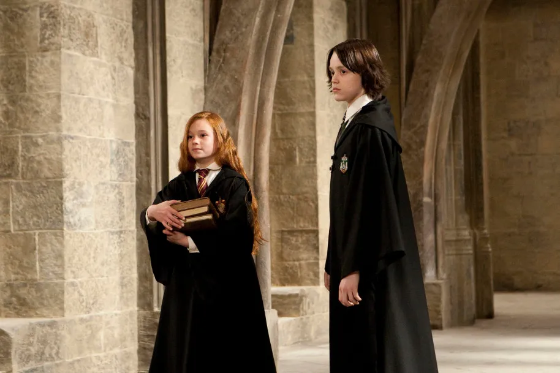
人们拉帮结派霸凌男孩，当着女孩的面脱他的裤子。
They ganged up to bully the boy, stripping his trousers off in front of the girl.
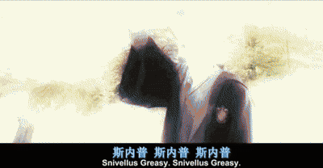
他一辈子都无法忘记罪魁祸首的名字——詹姆·波特。
但女孩却偏偏爱上这个混蛋。
他越来越阴暗，迷上黑魔法，成为食死徒。
女孩和他，划清界限。
He could never forget the ringleader’s name — James Potter. Yet the girl fell for that scoundrel.
He grew darker, obsessed with the Dark Arts, became a Death Eater. The girl cut him off.
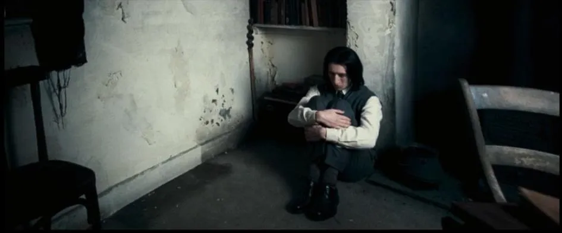
毕业后，女孩和詹姆结婚，生下了哈利。
他留在了学校，再也没爱过任何人。
After graduation, the girl married James and had Harry. He stayed at the school — and never loved anyone again.
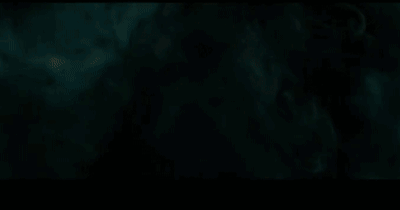
爱而不得，孤独终老。
在得知黑魔王要杀死莉莉后，他冒死告密，苦苦哀求。
邓布利多问：“你用什么来换她周全。
”他声音颤抖：“Anything。
”
To love without ever having, to grow old alone. Learning the Dark Lord meant to kill Lily, he risked death to pass word, begging desperately. Dumbledore asked, “What will you give in exchange for her safety?” His voice trembling: “Anything.”
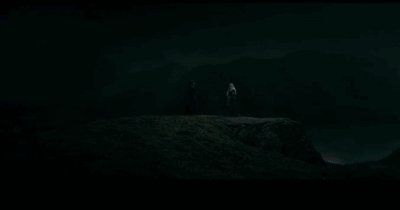
莉莉，还是死了。
Lily died anyway.
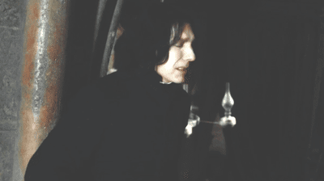
那一晚，他第一次抱住女孩，唯一一次，最后一次。
That night, he held the girl for the first time — the only time, the last time.
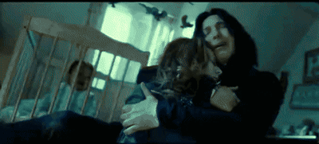
那双碧茕茕的眼睛，如坠晓星，烫穿那身黑袍，一个大洞，撕心裂肺。
他恨哈利的父亲，因为他的傲慢，错信叛徒泄露地址，害死了他的莉莉； 他针对纳威，都是7月出生的男孩，如果伏地魔选择了纳威，他的莉莉就不会死。
他的眼里只有莉莉。
但爱，本身就是自私的。
莉莉用爱守护了哈利的生命，他决定用生命去守护莉莉唯一的爱。
Those luminous green eyes, like fallen evening stars, burned through his black robe — a great hole, heart-rending.
He hated Harry’s father — for his arrogance, for trusting the traitor who gave away the address, for causing Lily’s death.
He targeted Neville — both boys born in July; had Voldemort chosen Neville, his Lily would not have died.
His eyes held only Lily. But love, in itself, is selfish.
Lily guarded Harry’s life with love; he resolved to guard Lily’s only love with his life.
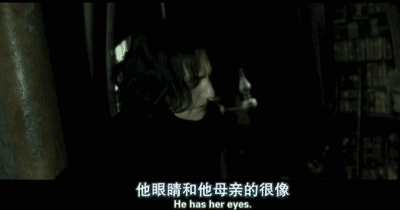
大致当前，邓布利多说“斯内普，你要杀了我伏地魔才完全相信你。
”
With the enemy at the gates, Dumbledore said, “Snape, you must kill me before Voldemort will trust you completely.”
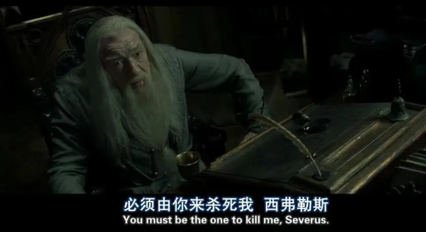
那句“please”，不是让斯内普手下留情，而是下达命令。
这句“Please”，不是“放过我”，而是“杀了我。
”
That “please” was not begging Snape for mercy — it was an order.
That “Please” did not mean “spare me.” It meant “kill me.”
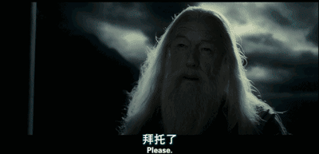
他咬着牙照做：千夫所指，众叛亲离，所有的罪名我一个人受。
麦格教授将他赶出学校，人们只看到他的狼狈，却没看到他把魔咒弹到了背后食死徒的身上。
He gritted his teeth and obeyed: condemned by thousands, forsaken by all — every crime his alone to bear.
When McGonagall drove him from the school, people saw only his disgrace — not how he deflected his curses onto the Death Eaters behind him.
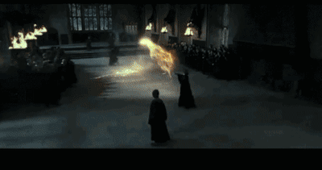
他在霍格沃茨的最后一眼，是在人群中，找寻哈利的绿眼睛。
His last glance at Hogwarts swept the crowd, searching for Harry’s green eyes.
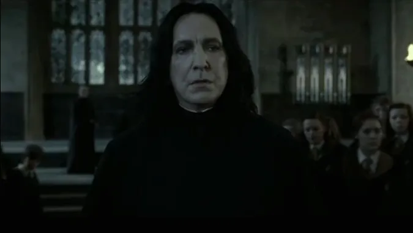
他来霍格沃茨的第一眼，是在人群里，找寻莉莉那双绿眼睛。
His first glance at Hogwarts had swept a crowd, searching for Lily’s green eyes.
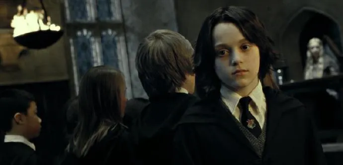
斯内普的一生都在找寻，但他早就知道结果。
大蛇纳吉尼撕咬他的残躯，足足5口，血喷了一整面墙，他用尽最后一口气哀求：“看着我。
”
Snape spent his life searching — though he had long known the answer. The great serpent Nagini tore at his broken body, five bites, blood spraying an entire wall, and with his last breath he pleaded: “Look at me.”
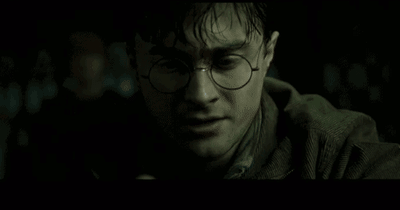
“你有一双和你妈妈一样的眼睛”，至死方休。
“You have your mother’s eyes” — unwavering, unto death.
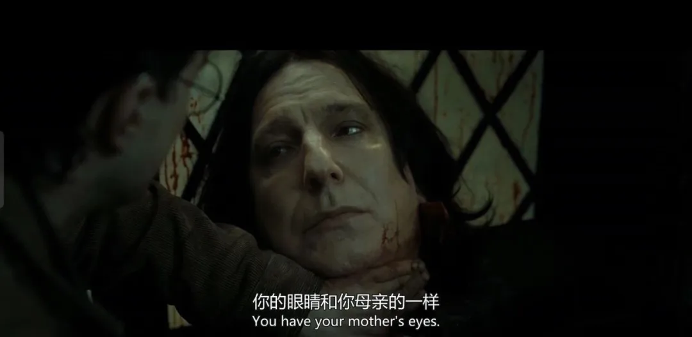
斯人已逝，我们才看到了最泪崩的真相：斯内普的守护神，和莉莉一样，是母鹿。
Only after he was gone did we learn the most heartbreaking truth: Snape’s Patronus, like Lily’s, was a doe.
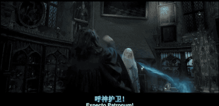
为什么不是公鹿？
他和莉莉注定不能相爱，但他依然记得掌心花开，记得：“我和你一样，别怕。
”
Why not a stag?
He and Lily were never meant to love — yet he still remembered the blossom in her palm, still remembered: “I’m just like you. Don’t be afraid.”
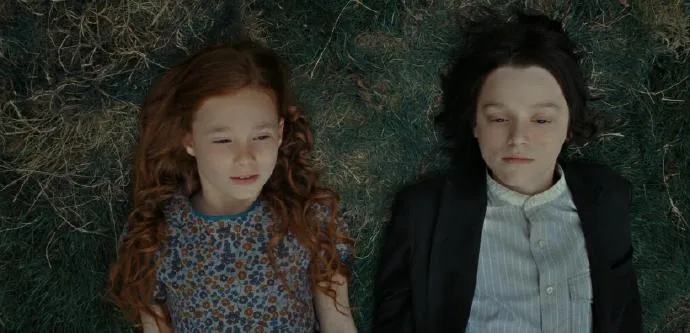
他这生唯一的快乐，只与她有关。
“Always”，轻得如一句叹息。
The only happiness of his life had to do with her.
“Always” — light as a sigh.
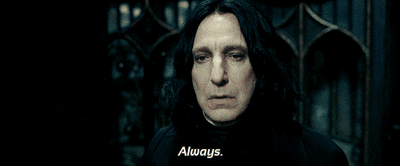
28年了，你的莉莉，终于听到了。
Twenty-eight years. Your Lily finally heard it.
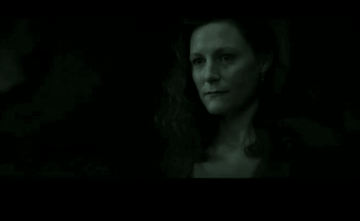
故事的开头，霍格沃茨，哈利第一次问及斯内普教授：“他是谁”？
故事的结局，9¾站台，哈利最后一次提到斯内普教授：“他是我见过最勇敢的人”。
At the story’s beginning, at Hogwarts, Harry first asked of Professor Snape: “Who is he?”
At the story’s end, at Platform 9¾, Harry spoke of Professor Snape for the last time: “He was the bravest man I ever knew.”
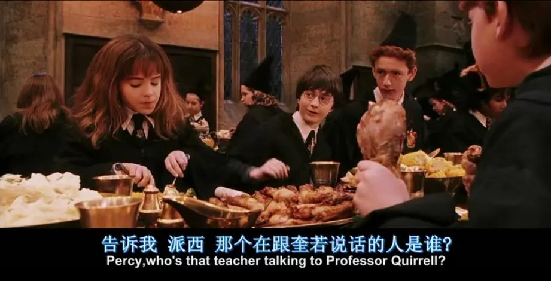
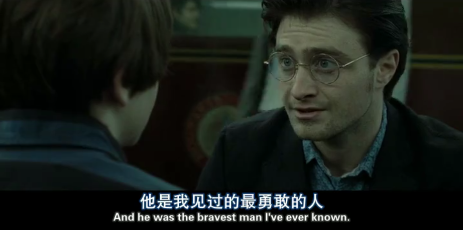
然而这个人，我们戏里戏外都留不住。
2016年1月14日，斯内普教授的扮演者艾伦·瑞克曼因癌症去世，享年69岁。
艾伦的一生，成就了斯内普，却不止斯内普。
脱去长袍，他成熟儒雅，曾两次入选电影史上100位最性感影星。
Yet this man we could keep neither on screen nor off.
On January 14, 2016, Alan Rickman — who played Professor Snape — died of cancer. He was 69.
Alan’s life made Snape — but was far more than Snape.
Out of the robes, he was mature and refined, twice named among the 100 sexiest film stars in history.
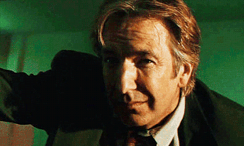
这双深邃的黑瞳，也是我们永远追随的星辰吧。
Those deep dark eyes — the stars we shall follow forever.
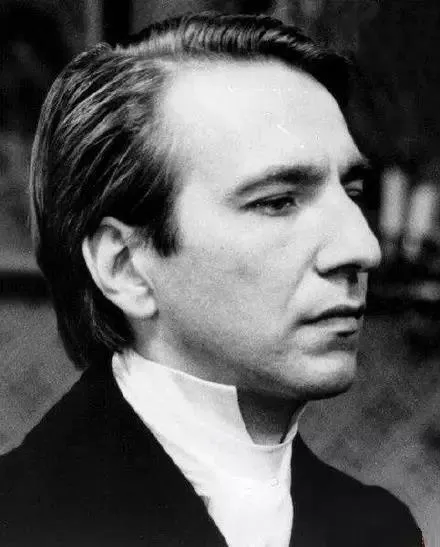
大器晚成的艾伦，41岁才第一次登上电影银幕，他在《虎胆龙威》里扮演的顶尖恶棍，邪魅中透着锐气。
A late bloomer, Alan first appeared on the silver screen at 41, playing the ultimate villain in Die Hard — wickedly charming with an edge of steel.
在每年圣诞必看的《真爱至上》，他是魅力四射的英伦大叔。
In Love Actually, the must-watch every Christmas, he was the utterly charming English gentleman.
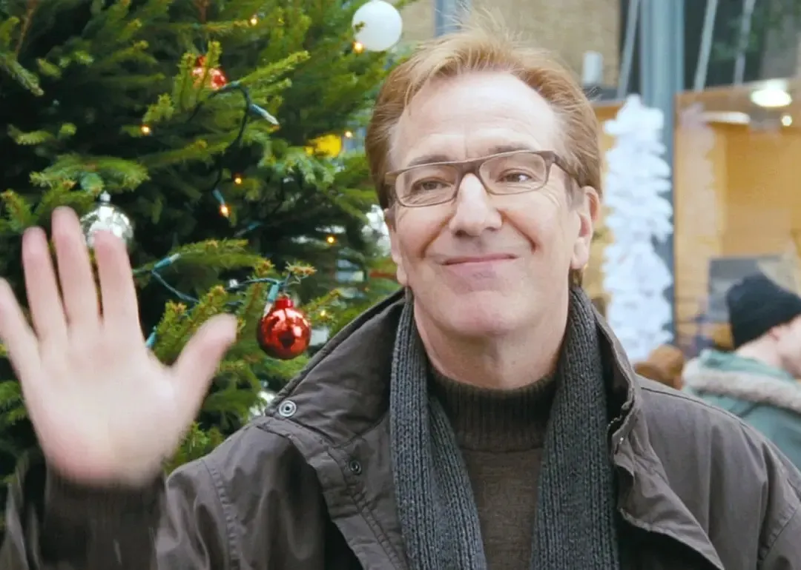
在《理智与情感》，他是隐忍柔情的布兰登上校。
In Sense and Sensibility, he was the restrained, tender Colonel Brandon.
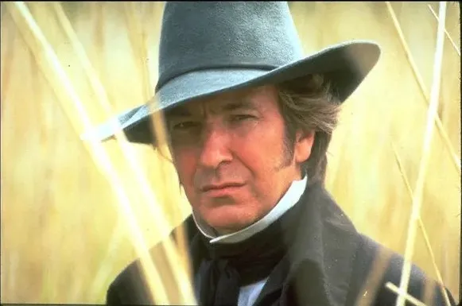
在《怒犯天条》里，他是竖中指的丧脸天使。
In Dogma, he was the deadpan angel flipping the bird.
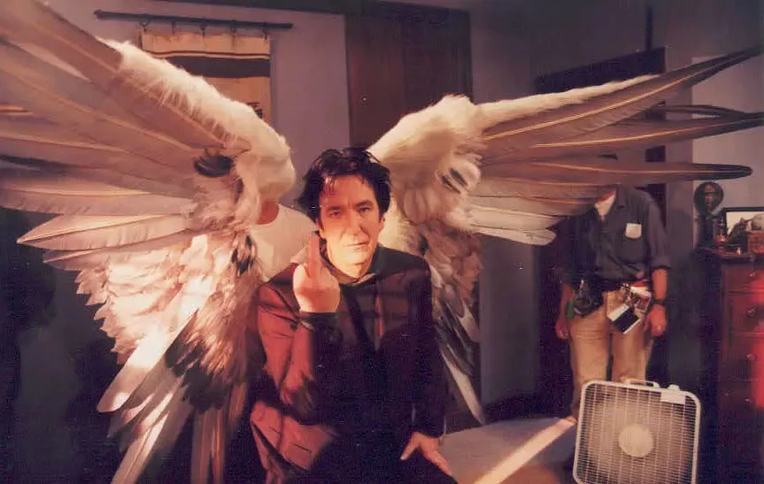
在《惊爆银河系》，艾伦又成功化身可可爱爱的外星人。
In Galaxy Quest, Alan transformed into an adorable alien.
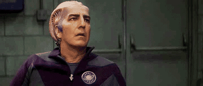
我们铭记斯内普，又怎会遗忘艾伦？
《哈利波特》电影8部曲，整整十年，我们都成为了见证生离死别的魂器。
前段日子，一个意大利妹子看完《死亡圣器（下）》，感谢罗琳当年说服艾伦·瑞克曼出演这个角色，才有了如今完美的斯内普。
We remember Snape — how could we forget Alan?
Across the eight Harry Potter films, a full ten years, we all became Horcruxes bearing witness to parting and death.
Not long ago, an Italian girl, after watching Deathly Hallows Part 2, thanked Rowling for persuading Alan Rickman to take the role all those years ago — giving us the perfect Snape.
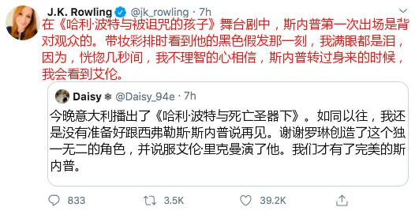
本以为只是有感而发，罗琳的回复却让眼睛进了砖。
斯内普让我们含泪道别，艾伦和我们笑着再见。
What seemed a passing thought drew an answer from Rowling that brought tears to our eyes.
Snape made us say goodbye through tears; Alan left us with a smile.
电影开拍时，《哈利波特》还没写完，艾伦是第一个知道斯内普爱着莉莉的人。
每当导演问他为什么不照剧本念台词，他总是偷笑：“我知道你们不知道的事情哦~”
When filming began, Harry Potter wasn’t finished being written — Alan was the first to know that Snape loved Lily.
Whenever the director asked why he wouldn’t read his lines as written, he’d smirk: “I know things you don’t~”
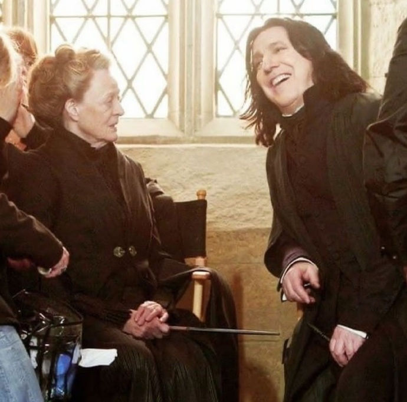
小演员们非常入戏，看到艾伦就怕到掉头走。
但每天探班时间，身披黑袍的斯内普教授总是被一大群小朋友影迷围住，嘻嘻哈哈谈天说地。
The young actors were so into it they’d turn and run at the sight of Alan. But every day at visiting hours, Professor Snape in his black robes was mobbed by crowds of young fans, chatting and laughing together.
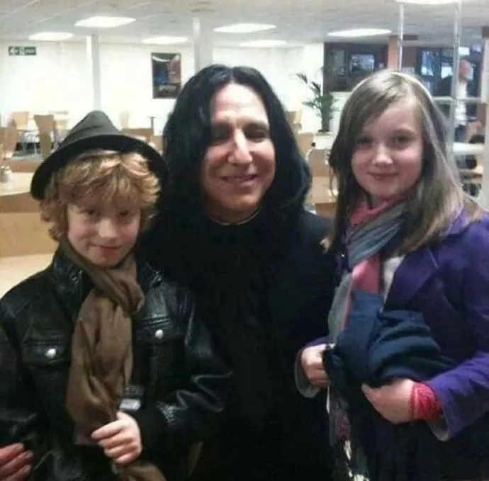
艾伦每次开拍，全场都不敢说话，有人却发现了他的“猫腻”：艾伦的假发里漏出了IPod的白色耳机线。
但从来没人敢问他听的是什么？
Whenever Alan was filming, no one on set dared speak — yet someone spotted his secret: the white earphone cord of an iPod peeking from under his wig. But no one ever dared ask what he was listening to.
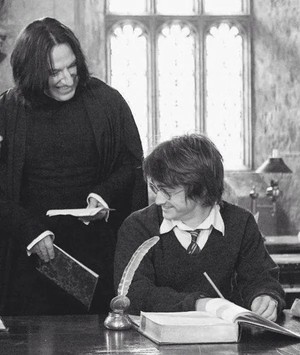
有了鼻子的伏地魔其实是个性感娇娃，对着镜头搔首弄姿，斯教就拿着老魔杖狂敲他的光头。
Voldemort with a nose turned out to be a glamorous diva, posing for the camera — while Snape rapped his bald head with the Elder Wand.
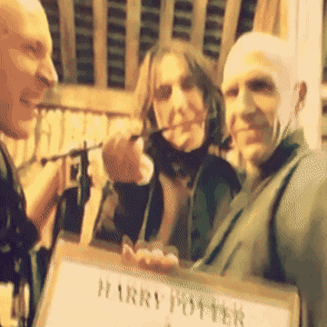
实名怀疑邓布利多常年在麻瓜世界做热场DJ，随时随地蹦迪，斯教笑到刘海都乱了。
It’s strongly suspected Dumbledore moonlights as a warm-up DJ in the Muggle world, dancing anywhere anytime — Snape laughed so hard his bangs went crooked.
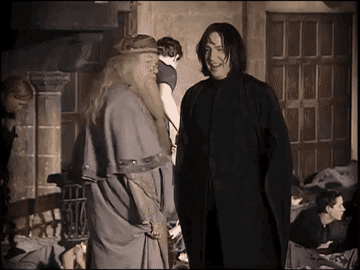
催泪一幕，哈利按着斯内普的伤口，斯教脖子发痒，笑到NG了又NG：“别搞我了，老子都要死了诶”。
In a tearjerker scene, Harry pressed on Snape’s wound — Snape’s neck tickled, and he laughed through take after take: “Stop it, I’m supposed to be dying here!”
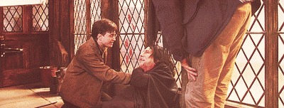
笑声中，好像他们未曾离开过，光影里，就像故事从来没完结。
每年5月2日，J·K罗琳都会向一位死去的角色道歉。
Amid the laughter, it was as if they’d never left — in light and shadow, as if the story never ended.
Every May 2nd, J.K. Rowling apologizes to a character who died.
双子星弗雷德，他教会我们：勇于挑战，无畏无惧。
Fred of the twins — he taught us: dare to challenge, fear nothing.
小精灵多比，他教会我们：追求自由，守护朋友。
Dobby the house-elf — he taught us: seek freedom, protect your friends.
邓布利多，他教会我们：决定我们人生的，不是能力，而是选择。
Dumbledore — he taught us: it is not our abilities but our choices that shape our lives.
斯内普教授，他教会我们：世上不只有好人和食死徒。
Professor Snape — he taught us: the world holds more than the good and the Death Eaters.
卢平和唐克斯，他们教会我们：最美的爱情，死亡从不是终点。
Lupin and Tonks — they taught us: in the most beautiful love, death is never the end.
小天狼星，他教会我们：深爱我们的人，永远不会离去。
Sirius — he taught us: those who love us deeply never truly leave.
生离死别，物是人非，我们已不是那个异想天开的小麻瓜，但《哈利·波特》教会我们的魔法一直都在。
Partings and deaths, the world changed — we are no longer those whimsical little Muggles, but the magic Harry Potter taught us lives on.
就在这里，总在这里。
Always.
Right here. Always here.
Always.